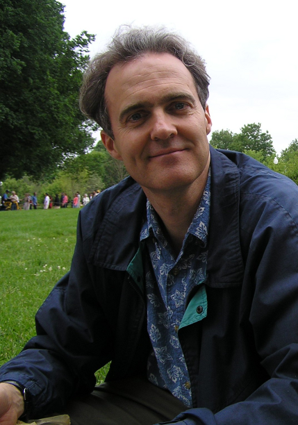

About Matthew Buresch

Matthew Buresch was the man I loved with great passion and devotion. He was my best friend in a life journey that took us through the paradise of love and family, and through the desert of death. Matthew had an exceptional intellectual curiosity about science, history, and business. He also had exceptional faith and pure connection to God that illuminated all the decisions in his life and how he treated other fellow travelers in life. Matthew was a true disciple of Christ. I had the privilege to stand by him in his last days of life in this world and to witness again the integrity of his character, the strength of his mind, and the generosity of his heart toward all people.
Matthew did not see his work as done but as a work in progress that required much more development. He hoped that this essay some day would be expanded into a book that would further develop the many topics addressed. The essay has become the basis for this website. With it, we are seeking input, corrections, and insights from many people. We hope with this site we will continue to gather not only feedback but also foster discussion and collaboration among similar-minded individuals.
Matthew’s journey led him to explore how many Christian businessmen have come to hold the “invisible hand of the market” credo with considerable reverence. Matthew dared to ask questions that no one else would dare even to think privately. Why have Christians in mainstream business come to exhibit such faith in the market and what basis is there in the Bible for such a conviction? Is this faith in the market possibly idolatrous and could it be drawing Christians away from the true source of life and power in the world that represents the Mind behind the invisible hand?
--Lyubomira Buresch